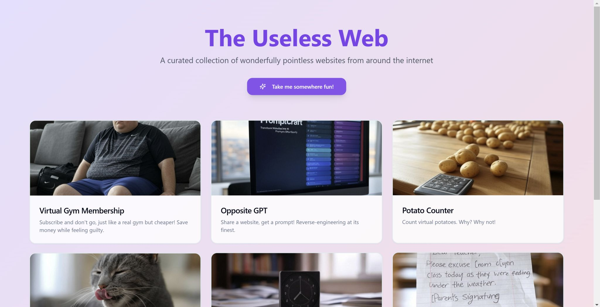

"The Useless Web” - Taking Lovable.dev the AI site builder for a Test Drive 🚀
Originally published on LinkedIn
"The Useless Web” - Taking Lovable.dev the AI site builder for a Test Drive 🚀
Over the past few weeks, I’ve been testing Lovable.dev, putting every random idea that popped into my mind through its AI-powered site builder.
From landing pages to more complex systems, I wanted to see just how far it could go.
What I found is that it understand simple prompts better than tools (like Claude).
For example, I gave it a prompt to create the game Super Tic Tac Toe (inspired by a TikTok video), and it built this on the first try (play it here: https://lnkd.in/d28ywvVQ)
But here's the catch:
While Lovable excels at quickly building something functional, "text-to-code" (or "text-to-fullstack website") is far from production-ready.
The generated code often includes bad practices, so if you need something scalable, secure, or polished, you’ll still have to export it to an IDE and edit it manually.
So what is Lovable good for?
It's the sweet spot between landing pages and complex systems.
Lovable is the fastest, highest-quality tool I’ve found for generating quick proof-of-concept websites. Compared to other AI-driven site builders, it creates better-looking designs, sharper messaging, and supports multiple languages.
Still, I’d choose a professional solution for a real production website like Webflow, Elementor, etc. - or write my own code using tools like Cursor.
To truly push Lovable to its limits, I decided to test it with this prompt:
"Create a sleek, funny, centralized index website that serves as a hub to showcase all my quirky, fun, and ‘useless’ websites, with a simple, intuitive design that highlights creativity and invites exploration."
Confession: I didn’t write this prompt myself - I used ChatGPT to refine my idea into one clear sentence!
I just prompted: "i want to build an index website for all of my useless websites. write a prompt in sentence that explains the product".
The result? Not only did Lovable create the website, but it also suggested hilarious, creative ideas for quirky websites I hadn’t even thought of! I couldn’t stop laughing at some of them.
Each card on the page featured a unique funny idea - So I took it even further:
I asked Lovable to flesh them out further with this follow-up prompt:
"Write me the ideas of the websites as one-sentence prompts: ‘Build me a website of…’ and describe what’s in it so I can paste it into Lovable.dev."
It indeed provided me with a clear list of prompts, each tailored for creating new instances in Lovable, making it easy to build additional websites with minimal effort.
Within an hour of copying, pasting, and fine-tuning, I built The Useless Web:
https://lnkd.in/d4PRiY8U
(Note: For filler images, I used X Grok AI generator)
Lovable.dev is an incredible tool for rapid prototyping.
It’s not ready for production, but for anyone looking to experiment, test ideas, or showcase concepts, it’s a game-changer. Go and try it!
#Lovabe #LovableDev #AI #AITools #TextToCode
